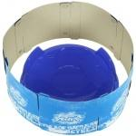

BeyStadium Super Attack Type
| BeyStadium Super Attack Type | |
|  | |
| Number: | BB-41 |
|---|---|
| System: | Metal Fight Beyblade |
Dimensions
Diameter: 34 cm
Tornado Ridge Diameter: 24 to 31 cm
Tornado Ridge Depth: 0.1 to 0.7 cm
Ridge Loop Maximum Length: 17 cm
Wall Length: 11 cm
Exit Length: 19,5 cm
Depth: 2 cm
Central Dome Length: 14 cm
Central Dome Height: ~1 cm
Slope: ~30°
Available Products
- BB-41 BeyStadium Super Attack Type
Gallery
Overall
As its name suggests, this BeyStadium tries to give as much advantage to Attack types as possible. Its overall size is similar to the BeyStadium Attack Type, with shorter and narrower walls, thus providing less protection for Defense and Stamina types due to the bigger exits. Its slope is also quite decent, but not very present due to the many elements of this Stadium's structure.
The second gimmick, oriented to help Attack types is the dome encrusted in the center of the Stadium. The dome is virtually shaped to form a convex surface. Additionally, it has a deep ridge all around it. Since its top is relatively elevated and that it is completely round, no Beyblade can remain atop the dome, therefore they all slide back to its base and circle it awkwardly. This behavior is caused both by the ridge sporadically trapping the Beyblades' tips, as well as their Metal Wheels dropping slightly and making contact with the immobile dome. This Stadium is therefore an enemy to the Beyblades by itself before they have even hit each other, because this dome can make almost any combination lose balance and stop spinning within seconds of launching it.
The third gimmick is the "Tornado Ridge", which is very particular in this BeyStadium. Instead of forming a clear circle around the Stadium, it has the shape of the flower pattern that a Beyblade produces when launched with a Sliding Shoot. This ridge is also very steep, which further helps Attack types since they have less chances of slipping out of the Stadium with their own speed. Generally, it is quite possible to launch an aggressive Beyblade and have it follow the flower pattern of the Ridge perfectly, but this phenomenon will only last a few loops since the Beyblade will be halted by the dome instead of being able to drive on its own momentum freely at the center of the Stadium. Often though, the Attack type will not have been shot at the right place and it will continuously hit the flower-patterned Ridge, which will on the contrary ruin its performance, if its opponent has not already lost all its spin from the disadvantageous central dome.
In conclusion, the BeyStadium Super Attack Type was once considered legal for World Beyblade Organization tournaments strictly because at least it gave a chance to Attack types, which is always healthier for a metagame than having Stamina types dominate. However, this chance turns out to be an almost unfair advantage, and it can even become trouble for Attack types themselves. As such, and with the introduction of fairer stadiums that were more available too, it is no longer legal, and should only be purchased for collection purposes or for fun play.
Customization Advice
To overcome the deep ridge around the dome in the center of the BeyStadium Super Attack Type, essentially only ball-shaped tips can be used effectively. Sharp tips will definitely be even more destabilized than they already are by nature, and Bottoms from the D line like WD also have a tip which is much too pointed not to get stuck in the crevasse. B Bottoms notably have a fair chance not to get imbalanced by the dome itself on their side, since they can simultaneously touch both the stadium floor and the dome and stay mostly upright. WB appears to be the prime candidate for this purpose.
Wide Tracks should be avoided at all costs due to the central dome. Attack types themselves should only use it if the probability is high that their Track will hit the opposing Beyblade first instead of anything in the composition of the Stadium.
All rubber and flat-shaped tips are recommended since they can easily follow a flower pattern. Even if the dome will destabilise them a lot and very quickly, Attack types are meant to strike within the first few seconds in normal play anyway, otherwise their chances of winning by a Knock Out or even an OutSpin decrease dramatically. Plus, the dome realistically lowers the survival time of all Beyblades down to the same level as that of a rubber-tipped Attack type, therefore choosing rubber will not be as much of a disadvantage as it might seem in this Stadium for Bladers who prefer fast Bottoms like WF and XF.